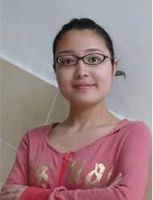

跨过人生低谷，飞跃前途险峰
尊敬的领导、老师，亲爱的同学，大家好！
我是城市与环境科学学院2005级的陈红，今天能有这样一次机会站在这里和大家一起分享我成长的点点滴滴，我感到非常荣幸，我报告的题目是《跨过人生低谷，飞跃前途险峰》
人生似洪水奔流，不遭遇岛屿和暗礁就难以激起美丽的浪花，逆境中的我变得乐观而坚强。
我来自四川省绵阳市安县沸水镇的一个偏僻农村家庭，父母均是地道的农民，从小没接受过什么教育。我家有5口人，所有开支几乎都只能靠父母务农所得，但在四川，人多地少，尽管父母每天披星戴
月，但仍没法改变窘迫的经济状况。
童年，记忆最多的是在家做饭干家务，春季插秧，秋季割麦，冬季拾柴，暑假，每天和父母一起帮别人剥药，每天手都浸在碱水里十余个小时，却挣不足十块钱。小学毕业我考上了县里最好的初中，开始了我的住校生活。初中，学习压力很大，周围都是很优秀的学生，自己很没有自信，自己唯一能做的就是整天的学习。第一次期中考试，我考了班级第一名，这份意外的惊喜给我带来了不少的信心。记得班主任常说：知识改变命运，“穷人因书而富，富人因书而贵”，我喜欢读书，那时我每个月的生活费也就30元，我就每天吃辣椒拌饭，省下钱来买书。
初二时，我们开始备战中考，那时母亲生病卧床不起，姐姐辍学外出打工，奶奶中风躺在床上也需要人照顾，家中所有的重担全落在父亲身上，父亲不希望我继续读下去。但我不愿意就这么放弃我的读书梦，我和父亲也因此结下了很深的矛盾，在一次争吵中，父亲非常生气的居然说他没有我这个女儿，扔给我300块钱让我走，其实那时我分明看到父亲眼睛是红红的，我一气之下拿着钱跑回了学校，在路上我摔倒了，膝盖流着血，但真的一点也没有感到痛，我在伤心为什么父亲就不能理解支持我，真的想永远不再回家。心情失落到了极点，感到前途一片暗淡，每天在被窝里独自流着眼泪，变得沉默悲观，性格孤僻。当时我想过放弃读书，想过回家帮忙，过大多数农村女孩应过的生活，但每当这样想时，内心总有一个不甘心的声音在呐喊。看着直线下降的成绩和日渐临近的中考，我告诉自己不能再消沉下去，如果这样那就是输给自己，抱着和命运对抗和豁出去的心情，我开始认真的学习，心情反而轻松了不少，瞒着家人，我报考了高中，并以超出录取线16分的成绩考上了国家级重点高中。而我读书的机会也因为我的坚持和我考的好成绩争取到了。怀揣着四处凑来的学费，也怀揣着对未来的憧憬我进入了高中，人生仿佛看到了第一缕阳光。
高中三年我的学习成绩一直保持在前两名，在老师和同学的帮助下我走出了初中时的心理阴霾，并担任了班长。高中是值得人回忆的——运动会前每天和大家在运动场中训练，12.9文艺汇演节目前的辛苦排练，考试前的挑灯夜战，下晚自习后一起在操场狂奔呐喊，和室友一起对未来畅想卧谈，帮助同学排忧解难……高中紧张忙碌的生活让我变的自信乐观。但不幸并没有因为这些而停止它的脚步。
姐姐由于婚姻不幸，一直带着孩子和我们住在一起。高二时，孩子病了，吃东西吃什么吐什么，四处求医，但仍无济于事，只能看见她日渐消瘦，水汪汪的大眼睛也失去了往日的神采，常常一个人坐在门口望着远方发呆，喊着她从来也没有见到过的爸爸。直到最后才检查出小孩患了脑瘤，并且已经是晚期，若做手术得花20多万而且还不知道结果会怎样，20多万，一个天文数字，钱还没有凑够时，小孩就在吃完自己四岁生日蛋糕后走了，而我却连她的最后一眼也没有看到。处理完孩子的后事，爸爸到学校给我开家长会，毫不知情的我看到脸色苍白瘦削的父亲，不详的预感袭来，知道结果后惟一的反应就是泪如泉涌。高三时，舅舅在外打工，不幸患上了肝癌，回家没多久就花去了不多的积蓄，而对苦命的舅舅来说，那时惟一能依靠的就只有我的母亲，母亲四处借钱给舅舅治病，但舅舅肚子里的浮水却一天天的肿胀起来，最后卧床不起，留下一身债务永远的闭上了眼睛。
亲人的病故，不仅使家里债台高筑，在精神上更是巨大的打击。母亲由于操劳焦虑过度，经常头痛难忍，每次头痛也都只是吃几片止痛药暂时缓缓，有时痛得脸肿呕吐，听着母亲夜里痛苦的呻吟声，我的心都快碎了，但却什么忙也帮不上。亲人的离开，让我真切的体会到人生的无常和生命的短暂。我想即使我以后不能成为一名医生，我也要好好学习，为父母提供一个更好的生活环境。高考时由于给自己的压力太大，我并没有发挥的很好，但幸运的是我被东北师范大学录取了，我的人生也因为来到师大翻开了崭新的一页。
有梦的地方就有精彩，大学，我成长与收获的殿堂。
2005年9月，从没有出过远门的我怀着梦想，带着简单的行李独自踏上了北上的火车，来到了一个完全陌生的环境。2005年10月，大学的第一个国庆节，当大家都忙着庆祝节日时，我找到了大学的第一份家教，用自己所学的知识挣到了人生的第一笔钱。如今，由于学校的资助和自己的勤工助学我已基本实现了经济的独立，为家庭减轻了不少的负担。
刚进大学的我不善言谈，性格也比较内向，我对自己说我要改变，于是我参加各种活动，积极认真的去做每一件事。大一时我参加了学院“感悟东师”演讲比赛，普通话并不好的我每天对着镜子苦练百遍，努力区分着每一个前鼻音、后鼻音，l和n，最终获得三等奖；迎新晚会，我和室友一起出谋划策，最终以别出心裁的环保时装秀震撼全场。
作为新时代的大学生，我希望自己能成为一个有用的人，尽自己所能去帮助服务他人。作为院学生会秘书长，班级生活委员、班长，我总觉得自己有用不完的激情使不完的精力，工作虽然忙碌，但我忙并快乐着，成长感动着。
大一大二我一直在学生会学研部工作，大三担任了秘书长，这对我来说是一个很大的挑战，全新的工作需要我不断的学习摸索，不断的思考，我在想秘书处这个学生会的枢纽部门怎样才能协调好各部门的工作，怎样才能为各部门做到最好的后勤保障，怎样才能打造出一种家的感觉。每天熬夜修改着部门规章，学生会条列，每次活动前和大家一起设计活动方案，思考着每一处细节。记得去年的迎新晚会，是我们新一届学生会成员举办的第一次大型活动，我们精心准备了近一个月，当节目开始的那一刻，我们在幕后激动的掉下了眼泪，晚会的成功举行给我们新一届学生会迎来了一个开门红。今年的4.22世界地球日，我们思考着如何将这历届传承下来的活动创新，活动经费不足了，我就带着部员四处拉赞助，碰了很多壁，电话也不知打了多少个，后来和苏宁软磨硬泡，终于得到了苏宁的赞助，活动当天忙碌的准备，对天气的担忧，对演出的担心，对零时状况的处理，一天下来，饭一口没吃，累的胃疼，但看到三个多小时的演出得到大家的一致好评，篮球场上座无虚席，心里却乐开了花，像蜜一样甜。在面对免费师范生的入学，我们在思考，如何将每年必搞的教师技能大赛更有针对性，于是深受同学喜欢的“地理教学基本功大赛”诞生了……还记得去年圣诞，学生会全体60多人一起包饺子，一起为小鹏过生日，一起跳舞，那一刻，我们找到了家的温馨。学生会的工作磨练了我的意志，锻炼了我的工作能力，同时让我收获了友谊，收获了感动，收获了付出的快乐，让我的大学生活绚丽多彩，给了我人生一段最美丽的回忆。我也因此变得更加开朗乐观！
尽管工作，家教占用了我不少时间，但我时刻也没有忘记学习，从一个农村女孩成长为一名大学生，我深知学习机会的来之不易，所以我非常珍惜。每天一大早，有我在食堂朗读英语的声音；每堂课下课，有我向请教老师的场景；每天去图书馆的路上，有我背着大书包的背影。
师大，我最喜欢去的地方是图书馆，因为图书馆能够满足我对书的热望，我喜欢看到架子上的一排排整齐的书籍，我喜欢大家一起学习的宁静的氛围，我喜欢翱翔在知识的天空。大学里，不管每天自己有多忙，我都会挤出时间到图书馆学习一会。“少年辛苦终身事，莫向光阴惰寸功”，大一下期我通过了英语四级考试，大二上期以优异的成绩通过英语六级考试及计算机二级考试，同时完成了计算机辅修的学习。通过对专业的学习，我深深的喜欢上我的专业----环境科学，我知道光是学好课本上的知识是远远不够的，还必须有实践，因此，我参加了学校的科研立项，并担任项目组长，平时帮老师做课题，这些科研工作不光提高了我的能力，增加了我的科研兴趣，同时也为我的继续学习打下了很好的基础。
大学，我给周围人最深的印象可能就是我匆忙的身影，我喜欢将时间安排的紧凑有序，我喜欢充实忙碌的生活。但是，有时候自己也会很大的压力，也会感到很累，也有面对工作学习关系的矛盾心理，每当这时，晚上我会一个人到运动场上静静地走几圈，吹着轻轻的风，抬头看看天空的星星和月亮，感觉那是远方的亲人在对我微笑，在安慰鼓励我，我重新思考着如何面对生活，面对挑战，看着微笑的星星，烦躁的心会变得很宁静，感觉又注入了新的动力和活力，心情也会爽朗很多。
功夫不负有心人，三年的努力，让我收获很多。大一获得校长奖学金，遗传与细胞研究所奖学金，大二获得国家奖学金，大三再次获得校长奖学金，教师技能教学金，连续三年被评为优秀学生，大学第一批加入中国共产党，并成为师大百名优秀学生干部培育团队成员之一，这学期我以专业课第一的成绩获得学校外推资格，在几十个人的面试中，以第一的成绩脱颖而出，被同济大学环境工程专业录取，并申请到仅有的4个硕博连读名额之一。
曾听到过这样一句话：人生是否都是蜿蜒曲折的上坡的路呢？对，一直到尽头都是！
是的，生活从来都没有停止对我们的考验。大一时，爷爷在病痛中离开，我很痛心为什么人生会面临这么多死亡；大二时，姐姐生病了，一直到现在还没什么好转；今年的5月12日，又是一个难忘的日子，家中的财产在地震中严重受损。我亲爱的父母，生活让你们承受了太多。
我喜欢将我的快乐和收获告诉远方的父母，当第一次在电话那头听到父母开怀的笑声时，我偷偷的哭了，我为这久违的笑声而感动，为自己能带给父母快乐而高兴，我知道这是不善言谈的父母在为他们的女儿感到骄傲，父母的笑声也成为我奋斗的最大动力。
人的一生可以燃烧，也可以腐朽。在大学这个缤纷多彩的舞台上，我选择了尽情的燃烧，尽情的绽放！ 我感谢我的大学生活，她让我变得更加积极、乐观与自信，她让我相信只要朝着自己的目标一步一个脚印，脚踏实地，生活是不会欺骗自己。
生就像一场障碍赛跑，障碍物设置的越高，当你成功跨越时，证明你的弹跳能力就越强韧，生活的困难并没有击败我，而我始终抱着希望与梦想在人生的障碍赛跑中勇敢的前进。
一路走来，我得到了很多人的关心，也得到了学校的很多帮助，我真心的感谢。今天我对大家讲的，并不是想说我遇到了多少的困难，而是想对大家说：生命只有一次，不管生命的道路上是否充满荆棘，我们都要坚持自己的理想与希望，用我们的乐观与笑容积极面对生活，一步一个脚印，将困难当作一种磨练，享受生命的点点滴滴，也许你在物质上是贫困的，但是你完全可以让自己成为一名精神上的富裕者。
飞翔的路上，尽管有含泪的风景，但最重要的是振翅高飞，永不停歇！跨过人生低谷，飞跃前途险峰！
童年，记忆最多的是在家做饭干家务，春季插秧，秋季割麦，冬季拾柴，暑假，每天和父母一起帮别人剥药，每天手都浸在碱水里十余个小时，却挣不足十块钱。小学毕业我考上了县里最好的初中，开始了我的住校生活。初中，学习压力很大，周围都是很优秀的学生，自己很没有自信，自己唯一能做的就是整天的学习。第一次期中考试，我考了班级第一名，这份意外的惊喜给我带来了不少的信心。记得班主任常说：知识改变命运，“穷人因书而富，富人因书而贵”，我喜欢读书，那时我每个月的生活费也就30元，我就每天吃辣椒拌饭，省下钱来买书。
初二时，我们开始备战中考，那时母亲生病卧床不起，姐姐辍学外出打工，奶奶中风躺在床上也需要人照顾，家中所有的重担全落在父亲身上，父亲不希望我继续读下去。但我不愿意就这么放弃我的读书梦，我和父亲也因此结下了很深的矛盾，在一次争吵中，父亲非常生气的居然说他没有我这个女儿，扔给我300块钱让我走，其实那时我分明看到父亲眼睛是红红的，我一气之下拿着钱跑回了学校，在路上我摔倒了，膝盖流着血，但真的一点也没有感到痛，我在伤心为什么父亲就不能理解支持我，真的想永远不再回家。心情失落到了极点，感到前途一片暗淡，每天在被窝里独自流着眼泪，变得沉默悲观，性格孤僻。当时我想过放弃读书，想过回家帮忙，过大多数农村女孩应过的生活，但每当这样想时，内心总有一个不甘心的声音在呐喊。看着直线下降的成绩和日渐临近的中考，我告诉自己不能再消沉下去，如果这样那就是输给自己，抱着和命运对抗和豁出去的心情，我开始认真的学习，心情反而轻松了不少，瞒着家人，我报考了高中，并以超出录取线16分的成绩考上了国家级重点高中。而我读书的机会也因为我的坚持和我考的好成绩争取到了。怀揣着四处凑来的学费，也怀揣着对未来的憧憬我进入了高中，人生仿佛看到了第一缕阳光。
高中三年我的学习成绩一直保持在前两名，在老师和同学的帮助下我走出了初中时的心理阴霾，并担任了班长。高中是值得人回忆的——运动会前每天和大家在运动场中训练，12.9文艺汇演节目前的辛苦排练，考试前的挑灯夜战，下晚自习后一起在操场狂奔呐喊，和室友一起对未来畅想卧谈，帮助同学排忧解难……高中紧张忙碌的生活让我变的自信乐观。但不幸并没有因为这些而停止它的脚步。
姐姐由于婚姻不幸，一直带着孩子和我们住在一起。高二时，孩子病了，吃东西吃什么吐什么，四处求医，但仍无济于事，只能看见她日渐消瘦，水汪汪的大眼睛也失去了往日的神采，常常一个人坐在门口望着远方发呆，喊着她从来也没有见到过的爸爸。直到最后才检查出小孩患了脑瘤，并且已经是晚期，若做手术得花20多万而且还不知道结果会怎样，20多万，一个天文数字，钱还没有凑够时，小孩就在吃完自己四岁生日蛋糕后走了，而我却连她的最后一眼也没有看到。处理完孩子的后事，爸爸到学校给我开家长会，毫不知情的我看到脸色苍白瘦削的父亲，不详的预感袭来，知道结果后惟一的反应就是泪如泉涌。高三时，舅舅在外打工，不幸患上了肝癌，回家没多久就花去了不多的积蓄，而对苦命的舅舅来说，那时惟一能依靠的就只有我的母亲，母亲四处借钱给舅舅治病，但舅舅肚子里的浮水却一天天的肿胀起来，最后卧床不起，留下一身债务永远的闭上了眼睛。
亲人的病故，不仅使家里债台高筑，在精神上更是巨大的打击。母亲由于操劳焦虑过度，经常头痛难忍，每次头痛也都只是吃几片止痛药暂时缓缓，有时痛得脸肿呕吐，听着母亲夜里痛苦的呻吟声，我的心都快碎了，但却什么忙也帮不上。亲人的离开，让我真切的体会到人生的无常和生命的短暂。我想即使我以后不能成为一名医生，我也要好好学习，为父母提供一个更好的生活环境。高考时由于给自己的压力太大，我并没有发挥的很好，但幸运的是我被东北师范大学录取了，我的人生也因为来到师大翻开了崭新的一页。
有梦的地方就有精彩，大学，我成长与收获的殿堂。
2005年9月，从没有出过远门的我怀着梦想，带着简单的行李独自踏上了北上的火车，来到了一个完全陌生的环境。2005年10月，大学的第一个国庆节，当大家都忙着庆祝节日时，我找到了大学的第一份家教，用自己所学的知识挣到了人生的第一笔钱。如今，由于学校的资助和自己的勤工助学我已基本实现了经济的独立，为家庭减轻了不少的负担。
刚进大学的我不善言谈，性格也比较内向，我对自己说我要改变，于是我参加各种活动，积极认真的去做每一件事。大一时我参加了学院“感悟东师”演讲比赛，普通话并不好的我每天对着镜子苦练百遍，努力区分着每一个前鼻音、后鼻音，l和n，最终获得三等奖；迎新晚会，我和室友一起出谋划策，最终以别出心裁的环保时装秀震撼全场。
作为新时代的大学生，我希望自己能成为一个有用的人，尽自己所能去帮助服务他人。作为院学生会秘书长，班级生活委员、班长，我总觉得自己有用不完的激情使不完的精力，工作虽然忙碌，但我忙并快乐着，成长感动着。
大一大二我一直在学生会学研部工作，大三担任了秘书长，这对我来说是一个很大的挑战，全新的工作需要我不断的学习摸索，不断的思考，我在想秘书处这个学生会的枢纽部门怎样才能协调好各部门的工作，怎样才能为各部门做到最好的后勤保障，怎样才能打造出一种家的感觉。每天熬夜修改着部门规章，学生会条列，每次活动前和大家一起设计活动方案，思考着每一处细节。记得去年的迎新晚会，是我们新一届学生会成员举办的第一次大型活动，我们精心准备了近一个月，当节目开始的那一刻，我们在幕后激动的掉下了眼泪，晚会的成功举行给我们新一届学生会迎来了一个开门红。今年的4.22世界地球日，我们思考着如何将这历届传承下来的活动创新，活动经费不足了，我就带着部员四处拉赞助，碰了很多壁，电话也不知打了多少个，后来和苏宁软磨硬泡，终于得到了苏宁的赞助，活动当天忙碌的准备，对天气的担忧，对演出的担心，对零时状况的处理，一天下来，饭一口没吃，累的胃疼，但看到三个多小时的演出得到大家的一致好评，篮球场上座无虚席，心里却乐开了花，像蜜一样甜。在面对免费师范生的入学，我们在思考，如何将每年必搞的教师技能大赛更有针对性，于是深受同学喜欢的“地理教学基本功大赛”诞生了……还记得去年圣诞，学生会全体60多人一起包饺子，一起为小鹏过生日，一起跳舞，那一刻，我们找到了家的温馨。学生会的工作磨练了我的意志，锻炼了我的工作能力，同时让我收获了友谊，收获了感动，收获了付出的快乐，让我的大学生活绚丽多彩，给了我人生一段最美丽的回忆。我也因此变得更加开朗乐观！
尽管工作，家教占用了我不少时间，但我时刻也没有忘记学习，从一个农村女孩成长为一名大学生，我深知学习机会的来之不易，所以我非常珍惜。每天一大早，有我在食堂朗读英语的声音；每堂课下课，有我向请教老师的场景；每天去图书馆的路上，有我背着大书包的背影。
师大，我最喜欢去的地方是图书馆，因为图书馆能够满足我对书的热望，我喜欢看到架子上的一排排整齐的书籍，我喜欢大家一起学习的宁静的氛围，我喜欢翱翔在知识的天空。大学里，不管每天自己有多忙，我都会挤出时间到图书馆学习一会。“少年辛苦终身事，莫向光阴惰寸功”，大一下期我通过了英语四级考试，大二上期以优异的成绩通过英语六级考试及计算机二级考试，同时完成了计算机辅修的学习。通过对专业的学习，我深深的喜欢上我的专业----环境科学，我知道光是学好课本上的知识是远远不够的，还必须有实践，因此，我参加了学校的科研立项，并担任项目组长，平时帮老师做课题，这些科研工作不光提高了我的能力，增加了我的科研兴趣，同时也为我的继续学习打下了很好的基础。
大学，我给周围人最深的印象可能就是我匆忙的身影，我喜欢将时间安排的紧凑有序，我喜欢充实忙碌的生活。但是，有时候自己也会很大的压力，也会感到很累，也有面对工作学习关系的矛盾心理，每当这时，晚上我会一个人到运动场上静静地走几圈，吹着轻轻的风，抬头看看天空的星星和月亮，感觉那是远方的亲人在对我微笑，在安慰鼓励我，我重新思考着如何面对生活，面对挑战，看着微笑的星星，烦躁的心会变得很宁静，感觉又注入了新的动力和活力，心情也会爽朗很多。
功夫不负有心人，三年的努力，让我收获很多。大一获得校长奖学金，遗传与细胞研究所奖学金，大二获得国家奖学金，大三再次获得校长奖学金，教师技能教学金，连续三年被评为优秀学生，大学第一批加入中国共产党，并成为师大百名优秀学生干部培育团队成员之一，这学期我以专业课第一的成绩获得学校外推资格，在几十个人的面试中，以第一的成绩脱颖而出，被同济大学环境工程专业录取，并申请到仅有的4个硕博连读名额之一。
曾听到过这样一句话：人生是否都是蜿蜒曲折的上坡的路呢？对，一直到尽头都是！
是的，生活从来都没有停止对我们的考验。大一时，爷爷在病痛中离开，我很痛心为什么人生会面临这么多死亡；大二时，姐姐生病了，一直到现在还没什么好转；今年的5月12日，又是一个难忘的日子，家中的财产在地震中严重受损。我亲爱的父母，生活让你们承受了太多。
我喜欢将我的快乐和收获告诉远方的父母，当第一次在电话那头听到父母开怀的笑声时，我偷偷的哭了，我为这久违的笑声而感动，为自己能带给父母快乐而高兴，我知道这是不善言谈的父母在为他们的女儿感到骄傲，父母的笑声也成为我奋斗的最大动力。
人的一生可以燃烧，也可以腐朽。在大学这个缤纷多彩的舞台上，我选择了尽情的燃烧，尽情的绽放！ 我感谢我的大学生活，她让我变得更加积极、乐观与自信，她让我相信只要朝着自己的目标一步一个脚印，脚踏实地，生活是不会欺骗自己。
生就像一场障碍赛跑，障碍物设置的越高，当你成功跨越时，证明你的弹跳能力就越强韧，生活的困难并没有击败我，而我始终抱着希望与梦想在人生的障碍赛跑中勇敢的前进。
一路走来，我得到了很多人的关心，也得到了学校的很多帮助，我真心的感谢。今天我对大家讲的，并不是想说我遇到了多少的困难，而是想对大家说：生命只有一次，不管生命的道路上是否充满荆棘，我们都要坚持自己的理想与希望，用我们的乐观与笑容积极面对生活，一步一个脚印，将困难当作一种磨练，享受生命的点点滴滴，也许你在物质上是贫困的，但是你完全可以让自己成为一名精神上的富裕者。
飞翔的路上，尽管有含泪的风景，但最重要的是振翅高飞，永不停歇！跨过人生低谷，飞跃前途险峰！